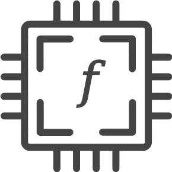

Open source · MIT Releases →Flow-Based Programming for Go
Build programs as graphs of small, reusable components. Pipes connect them, signals flow through, and FMesh runs every component that is ready at the same time. No goroutines, channels or locks to manage.
$ go get github.com/hovsep/fmesh
- Stdlib onlyNo third-party runtime dependencies
- ConcurrentReady components run in parallel
- DeterministicSame input, same output
- 20+ examplesFrom pipelines to a ray tracer
Quick start
Define components. Connect ports. Run.
A component is a set of named ports plus an activation function. Pipes connect outputs to inputs. The mesh runs in cycles until no component has work left.
// Error handling omitted for brevity
concat, _ := component.New("concat",
component.WithInputs("i1", "i2"),
component.WithOutputs("res"),
component.WithActivationFunc(func(_ context.Context, this *component.Component) error {
word1 := this.InputByName("i1").Signals().FirstPayloadOrDefault("")
word2 := this.InputByName("i2").Signals().FirstPayloadOrDefault("")
return this.OutputByName("res").PutSignals(signal.New(word1 + word2))
}))
uppercase, _ := component.New("uppercase",
component.WithInputs("i1"),
component.WithOutputs("res"),
component.WithActivationFunc(func(_ context.Context, this *component.Component) error {
str := this.InputByName("i1").Signals().FirstPayloadOrDefault("")
return this.OutputByName("res").PutSignals(signal.New(strings.ToUpper(str)))
}))
// The mesh holds the components, a pipe connects them
fm, _ := fmesh.New("hello world")
fm.AddComponents(concat, uppercase)
concat.OutputByName("res").PipeTo(uppercase.InputByName("i1"))
// Seed the inputs, then run
concat.InputByName("i1").PutSignals(signal.New("hello "))
concat.InputByName("i2").PutSignals(signal.New("world!"))
fm.Run(context.Background())$ go run .
Result: HELLO WORLD!
Why FMesh
Model the flow. FMesh runs it.
You describe what is connected to what. Scheduling, concurrency and ordering are handled for you.
Components
Small, independent blocks with named ports. Easy to test on their own.
Concurrency for free
Every component that is ready in a cycle runs at the same time, on a worker pool.
Discrete time
Execution runs in cycles, like ticks of a clock, so a run is easy to reason about.
Deterministic runs
Same input gives the same output, as long as your activation functions are deterministic.
Cancellation and deadlines
Run(ctx) passes the context to every activation function and hook.
Hooks and plugins
Add behavior at mesh, cycle, component and port level.
Metadata
Tag signals, components and ports with values, then filter and route by them.
Run report
Run(ctx) returns the result of every cycle, ready to inspect or test.
Core concepts
Five ideas, one small API
The whole model fits on one screen. Each concept links to its page in the wiki.
Visualize
See every cycle of a run
Export a mesh with fmesh-export and replay a run cycle by cycle. Below: an order-processing mesh with fan-out, fan-in, an error and a wait.
Use cases
Made for bounded dataflow
A mesh runs to completion over the data it was given. That fits a lot of problems.
Data pipelines
ETL, data processing, format conversion.
Workflow automation
Multi-step business processes with explicit, testable steps.
Simulations
Model physical, biological or engineered systems as parts that exchange signals, step by step.
Game logic
Entity systems and behavior trees.
Batch event processing
A bounded set of events, processed to the end.
Prototyping
Sketch a dataflow design and run it the same day.
Ecosystem
More than a library
A collection of experiments: ideas tried out with FMesh, from small sketches to bigger models. Clone one and play with it.
Browse examples → fmesh-exportExport a mesh as JSON, YAML, Graphviz DOT, Mermaid, D2 or PlantUML. Replay a run cycle by cycle.
See exporters → fmesh-hub newOne place for everything built for FMesh (plugins, exporters, tools) and with it.
Follow the hub →Good to know
Honest trade-offs
FMesh is not a classical FBP system and not a streaming engine. Pick it for the right job.
Great for
- Workloads with a clear start and end
- Logic you want to see as a graph
- Concurrency without writing goroutines
- Reproducible runs you can test cycle by cycle
Not built for
- Long-running components or real-time streaming
- Wall-clock events like timers and tickers
- Backpressure: a mesh keeps its signals in memory for the whole run
- A frozen API: FMesh is pre-production, so pin an exact version
Start building with FMesh
Install it, read the wiki, run an example. It takes a few minutes.